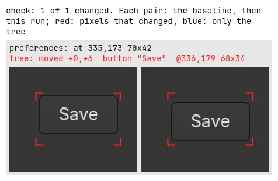
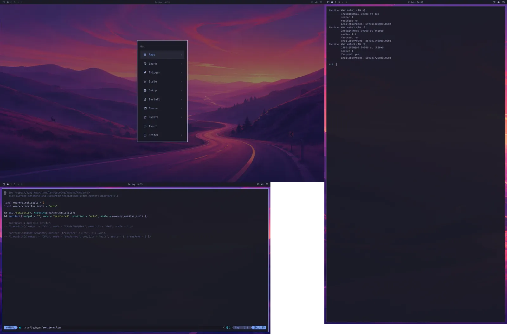

<style>
/* /develop: for people who script omabox (look, check, tree, snapshot/diff, the command log, the
   contract), and for people changing Hyprland itself. Omarchy plugins and themes are on /desktops. */
.who { font: 500 11.5px/1.4 var(--mono); letter-spacing: .12em; text-transform: uppercase; color: var(--muted); }
.who.f { text-transform: none; letter-spacing: .04em; }
.card.key { --fc: rgb(158 206 106 / .45); }
.card ul { margin: 0; padding-left: 18px; display: grid; gap: 8px; color: var(--ink-2); font-size: 15px; }
.card ul li { min-width: 0; }
.oma-link { margin-top: 28px; display: flex; flex-wrap: wrap; align-items: center; gap: 8px 18px; padding: 16px 20px; max-width: 760px; }
.oma-link b { font: 600 17px/1.3 var(--display); color: var(--ink); }
.oma-link span { color: var(--ink-2); font-size: 15px; flex: 1 1 260px; min-width: 0; }
.oma-link i { font: 500 12px/1 var(--mono); letter-spacing: .1em; text-transform: uppercase; color: var(--sky); font-style: normal; }
/* every desk you don't have: the three-monitor shot beside its commands */
.mons { display: grid; gap: 14px; grid-template-columns: minmax(0, 1fr); }
@media (min-width: 1080px) { .mons { grid-template-columns: minmax(0, 1.2fr) minmax(0, .8fr); align-items: start; } .mons > figure { position: sticky; top: 84px; } }
.mons > * { min-width: 0; }
.mons figure { margin: 0; }
.mons .ways { display: grid; gap: 14px; }
.ws figcaption { font: 400 12px/1.5 var(--mono); color: var(--muted); padding: 10px 14px; border-top: 1px solid var(--line); }
/* checks: a real report.png, each change beside its baseline */
.chk { display: grid; gap: 14px; grid-template-columns: minmax(0, 1fr); }
@media (min-width: 980px) { .chk { grid-template-columns: minmax(0, 1fr) minmax(0, 1.1fr); align-items: start; } }
.chk > * { min-width: 0; }
.rep { padding: 16px; }
.rep img { width: 100%; max-width: 476px; margin: 0 auto; border-radius: 8px; }
.hl4 { list-style: none; margin: 18px 0 0; padding: 0; display: grid; gap: 10px; grid-template-columns: minmax(0, 1fr); }
@media (min-width: 760px) { .hl4 { grid-template-columns: repeat(2, minmax(0, 1fr)); } }
.hl4 li { border-radius: 12px; border: 1px solid var(--line); background: var(--s1); padding: 12px 14px; color: var(--ink-2); font-size: 14.5px; min-width: 0; }
.hl4 b { color: var(--ink); font-weight: 600; }
/* tree: tokens, a shot against one line */
.tok { display: grid; grid-template-columns: minmax(0, 1fr) minmax(0, 1fr); gap: 14px; }
.tok .card .in { gap: 6px; }
.tok .n { font: 600 clamp(30px, 3.6vw, 44px)/1 var(--display); color: var(--ink); }
.tok .key .n { color: var(--box); text-shadow: 0 0 24px var(--box-glow); }
.tok p { font-size: 14.5px; }
.line2 { margin-top: 18px; color: var(--ink-2); max-width: 52em; }
.pjump { display: flex; flex-wrap: wrap; gap: 8px 22px; margin-top: 4px; }
/* look: the four kinds */
.looks { display: grid; gap: 14px; grid-template-columns: minmax(0, 1fr); }
@media (min-width: 760px) { .looks { grid-template-columns: repeat(2, minmax(0, 1fr)); } }
@media (min-width: 1240px) { .looks { grid-template-columns: repeat(4, minmax(0, 1fr)); } }
.looks > * { min-width: 0; }
.looks .code, #look .code, .contract .code { white-space: pre-wrap; overflow-wrap: anywhere; }
/* the contract */
.contract h3 { display: flex; gap: 10px; align-items: center; }
.contract h3 b { font: 500 11px/1 var(--mono); letter-spacing: .12em; text-transform: uppercase; padding: 5px 8px; border-radius: 999px; border: 1px solid currentColor; }
.k-keep b { color: var(--box); } .k-warn b { color: var(--amber); } .k-carry b { color: var(--sky); } .k-not b { color: var(--muted); }
.codes { width: 100%; border-collapse: collapse; font: 400 13px/1.5 var(--mono); color: var(--ink-2); }
.codes td { padding: 7px 0; border-bottom: 1px solid var(--line); vertical-align: top; }
.codes tr:last-child td { border-bottom: 0; }
.codes td:first-child { width: 74px; padding-right: 12px; color: var(--ink); font-variant-numeric: tabular-nums; white-space: nowrap; }
.cta-row { display: flex; flex-wrap: wrap; gap: 12px 20px; align-items: center; margin-top: 18px; }
</style>
<main class="wrap">
  <section class="page">
    <div class="head">
      <p class="tag">Develop</p>
      <h1>Script the loop. <i>Or test Hyprland itself.</i></h1>
      <p class="lead">For people who script omabox, in a hook, a test suite or CI, and for people building Hyprland, a shell
        or a plugin for one. Every command here is one an agent runs on its own too.</p>
      <div class="pjump"><a class="more" href="#look">Look in one call</a><a class="more" href="#diff">What it wrote</a><a class="more" href="#log">Who did what</a><a class="more" href="#hyprland">Hyprland</a><a class="more" href="#contract">The contract</a></div>
    </div>
    <a class="card oma-link" href="desktops.html#omarchy"><b>Plugins and themes for Omarchy</b><span>Your bar in a box, your theme
      live, a clean Omarchy for checks, Omarchy's own checkout, the bar widget.</span><i>Omarchy boxes →</i></a>
  </section>

  <section class="grp" id="look">
    <p class="tag">Look</p>
    <h2>Does it look right? <i>One call says.</i></h2>
    <p class="lead"><code>omabox look</code> checks an app, a shell plugin, a theme or a web page: a shot, what it shows as
      text, and the problems it logged. Exit 0 when it found none, 1 when it did, so it fits a script, a hook or a
      pre-commit check.</p>
    <div class="looks">
      <div class="card key"><div class="in"><p class="who f">look app</p><h3>A program</h3>
        <p>Its window shot, keys sent first if you give them, and its output read for errors, crashes and QML lines.</p>
        <pre class="code"><span class="p">$ </span>omabox look app --keys "ctrl+comma" -- ./build/app</pre></div></div>
      <div class="card"><div class="in"><p class="who f">look plugin</p><h3>A shell plugin</h3>
        <p>The bar's strip, its panel with <code>--open</code>, whether it loaded, the text the widget shows, and the shell's
          warnings that name it.</p>
        <pre class="code"><span class="p">$ </span>omabox look plugin ~/code/myplugin --open</pre></div></div>
      <div class="card"><div class="in"><p class="who f">look theme</p><h3>A theme</h3>
        <p>Applied for real: the desktop and a terminal printing its palette, and what a person would notice: text too faint,
          a colour no fallback resolves, a wallpaper too small.</p>
        <pre class="code"><span class="p">$ </span>omabox look theme ~/code/my-theme</pre></div></div>
      <div class="card"><div class="in"><p class="who f">look page</p><h3>A web page or a game</h3>
        <p>Chromium in the box with real frames, keys held over many of them, a contact sheet of shots, and the console's
          uncaught errors.</p>
        <pre class="code"><span class="p">$ </span>omabox look page game.html --hold Right 1500ms --shots 6</pre></div></div>
    </div>
    <div class="grid2" style="margin-top:14px">
      <div class="card"><div class="in"><p class="who">Which box</p><h3>Yours when it's up, a throwaway when not</h3>
        <p>With a box up, a look goes into it and leaves it as it is, so the same line after every rebuild is the check, in a
          second or two: <code>look app</code> replaces the copy it started last time, <code>look plugin</code> restarts the
          shell. With no box up, or with <code>--fresh</code>, it starts a throwaway box and takes it down however it ends.</p></div></div>
      <div class="card"><div class="in"><p class="who">Bare look</p><h3>The box now, and what broke since</h3>
        <p><code>omabox look</code> with no kind reports a box as it is: a shot, its windows, the active one's text, its
          plugins, and only the problems logged since the last look.</p>
        <pre class="code"><span class="p">$ </span>omabox look
<span class="o">screenshot: /tmp/omabox-mybox-101500-123.png
windows: 2
  tally "Tally" 960x680 (floating, active)
  foot "build" 946x1056 (tiled)
text: Today | 42 cups | Reset
plugins: me.tally loaded
box: mybox
new problems:
  tally: qrc:/Main.qml:42: TypeError: Cannot read property 'name' of undefined</span></pre>
        <p class="caption" style="margin:0">The example from omabox's own skill.</p></div></div>
    </div>
  </section>

  <section class="grp" id="check">
    <p class="tag">Visual checks</p>
    <h2>Visual checks, <i>without looking at every screen.</i></h2>
    <p class="lead">Write a scenario: a script that drives the box and calls <code>omabox check point ID</code> where a shot
      should match. <code>check run --approve</code> runs it three times in a clean box and keeps what most runs agree on.
      From then on, <code>check run</code> says same or changed for each checkpoint. Each changed region is marked, and for an
      app with an accessibility tree it names the element (<code>moved +0,+6 button "Save"</code>). One report image shows
      every change, the baseline beside the new shot.</p>
    <div class="chk">
      <div class="card"><div class="in">
        <pre class="code"><span class="o"># visual.sh, the scenario</span>
omabox run -d --wait -- ./build/app
omabox check point main
omabox click --window app 640 360
omabox check point settings</pre>
        <pre class="code"><span class="p">$ </span>omabox check run --approve -- ./visual.sh   <span class="o"># the baseline, from three runs</span>
<span class="p">$ </span>omabox check run -- ./visual.sh             <span class="o"># same or changed, each checkpoint</span>
<span class="p">$ </span>omabox check run --json -- ./visual.sh      <span class="o"># for CI</span></pre></div></div>
      <figure class="ws" style="margin:0">
        <div class="ws-bar"><span class="dots"><i></i><i></i><i></i></span><span class="t">report.png</span></div>
        <div class="rep"></div>
        <figcaption>A real report, from a box: a GTK window whose Save button moved 6 px down, the baseline beside the new run.</figcaption>
      </figure>
    </div>
    <ul class="hl4">
      <li><b>Small changes caught.</b> A 2 px spacing change is caught, and so is a colour a few levels off.</li>
      <li><b>Noise left out, and said.</b> What the approve runs disagreed on is left out and said.</li>
      <li><b>Holes fail.</b> The wallpaper showing through a window fails a check.</li>
      <li><b>For CI.</b> <code>--json</code>, and exit 4 when there is no baseline.</li>
    </ul>
  </section>

  <section class="grp" id="tree">
    <p class="tag">Accessibility trees</p>
    <h2>Text <i>instead of a shot.</i></h2>
    <div class="grid2">
      <div class="card key"><div class="in">
        <p><code>omabox tree</code> reads a window's accessibility tree: each control's role, name, text, value and state, with
          bounds a click takes. <code>tree --find 'dark mode'</code> prints the one line that answers the question. For GTK and
          Qt apps, Chromium or Electron with accessibility on, and egui apps on eframe 0.37+.</p>
        <pre class="code"><span class="p">$ </span>omabox tree --window app
<span class="p">$ </span>omabox tree --window app --find 'dark mode'</pre></div></div>
      <div class="tok">
        <div class="card"><div class="in"><span class="who">A shot</span><span class="n">~1.5k</span><p>tokens, to read whether
          dark mode is on</p></div></div>
        <div class="card key"><div class="in"><span class="who f">tree --find</span><span class="n">~17</span><p>tokens, the one
          line that says</p></div></div>
      </div>
      <div class="card"><div class="in"><p class="who">A bar's text</p><h3>What a widget shows, without OCR</h3>
        <p>Omarchy's bar sets no accessibility roles, so <code>tree --layer</code> lists the text the shell draws instead,
          with where it is. <code>--find</code> finds what a widget shows, and <code>click --find</code> clicks it. Panels the
          same, on their own layers.</p>
        <pre class="code"><span class="p">$ </span>omabox tree --layer omarchy-bar --find cups
<span class="p">$ </span>omabox click --layer omarchy-bar --find cups</pre></div></div>
      <div class="card"><div class="in"><p class="who">Notifications</p><h3>What the app notified</h3>
        <p>Every box records what reaches its notification server: app, summary, body, hints, actions, and each close or
          action, whatever server it is. <code>wait notification</code> waits for one; no <code>dbus-monitor</code> to grep.</p>
        <pre class="code"><span class="p">$ </span>omabox wait notification 'Download finished'
<span class="p">$ </span>omabox log notifications --json</pre></div></div>
    </div>
    <p class="line2"><code>omabox calibrate</code> tells an agent whether its model needs <code>--fit</code> to click right, for
      any model and harness.</p>
  </section>

  <section class="grp" id="diff" data-rail="what it wrote">
    <p class="tag">Snapshot and diff</p>
    <h2>What it wrote, <i>and what it left behind.</i></h2>
    <p class="lead">Snapshot the box HOME, install a plugin or an app, use it, remove it, and <code>diff</code> lists what
      was added, changed or removed, grouped by area: autostart, systemd user units, <code>mimeapps.list</code>, desktop
      entries, the shell's settings, <code>~/.config</code>, <code>~/.local/share</code>, elsewhere in HOME. A new folder is
      one line.</p>
    <div class="grid2">
      <div class="card key"><div class="in">
        <pre class="code"><span class="p">$ </span>omabox snapshot before
<span class="p">$ </span>omabox plugin add ~/code/tally
<span class="o">  ... use it ...</span>
<span class="p">$ </span>omabox plugin remove me.tally
<span class="p">$ </span>omabox diff before          <span class="o"># what remove left</span></pre></div></div>
      <div class="card"><div class="in"><ul>
        <li>What a box writes on its own (<code>~/.cache</code>, the shell's state, the session's keyring) is left out, so
          an idle box diffs to nothing. <code>--ignore PATH</code> adds to it; <code>--all</code> shows everything.</li>
        <li><code>diff --seed</code> starts from what <code>up</code> seeded, before the box started.</li>
        <li><code>--json</code> for a script. Links are never followed, FIFOs never opened.</li>
        <li>A snapshot lives in the box's folder, not its HOME, and goes with the box.</li></ul>
        <pre class="code"><span class="p">$ </span>omabox diff --seed --json</pre></div></div>
    </div>
  </section>

  <section class="grp" id="log" data-rail="who did what">
    <p class="tag">Logs</p>
    <h2>Who did what, <i>and how it ended.</i></h2>
    <div class="grid2">
      <div class="card key"><div class="in"><p class="who f">log commands</p><h3>Every command against a box</h3>
        <p>Each omabox command that named the box, a line each once it ended: what it was, whether it only read, its exit
          and time, and the agent session that ran it. When several agents share a box, it says who clicked what. Read it
          after <code>down</code> too. The text an agent typed, a password and an option's values are never in it, only their
          lengths or names.</p>
        <pre class="code"><span class="p">$ </span>omabox log commands
<span class="p">$ </span>omabox log commands --json --grep click</pre></div></div>
      <div class="card"><div class="in"><p class="who f">log run</p><h3>One job's output</h3>
        <p>A <code>run -d</code> job's log by its pid, as <code>jobs</code> lists it, ended or not; none named, the latest.
          <code>wait log</code> waits for a line in it.</p>
        <pre class="code"><span class="p">$ </span>omabox jobs
<span class="p">$ </span>omabox log run 12345 --grep error -i
<span class="p">$ </span>omabox wait log 12345 'listening on'</pre></div></div>
      <div class="card span2"><div class="in"><p class="who f">log autostart</p><h3>What your desk's config started, and what it didn't</h3>
        <p>In a box of your own desktop (<code>up --desktop desk</code>), what your config starts goes through a policy: idle
          and lock daemons, your systemd session and system-bus applets are dropped, the rest runs. Each decision is a line.
          <a href="desktops.html#desk">Your own desk →</a></p>
        <pre class="code"><span class="p">$ </span>omabox log autostart</pre></div></div>
    </div>
  </section>

  <section class="grp" id="record">
    <p class="tag">Video and sound</p>
    <h2>Videos <i>people can follow.</i></h2>
    <div class="grid2">
      <div class="card key"><div class="in">
        <p><code>omabox record</code> films a box, one monitor or all of them at once. <code>--show-input</code> draws in the
          clicks and keys, <code>--captions</code> puts your marks on screen, <code>--cut-idle</code> cuts the still stretches,
          and <code>--glide</code> makes the pointer travel instead of jump. <code>record stop --sheet</code> makes a contact
          sheet, so an agent can check a take without watching it. With <code>up --audio</code>, the sound goes in the video.
          It plays to a speaker nobody hears, never yours.</p></div></div>
      <div class="card"><div class="in">
        <pre class="code"><span class="p">$ </span>omabox up --audio
<span class="p">$ </span>omabox record start -o take.mp4 --monitor all --audio --glide 300ms
<span class="p">$ </span>omabox record mark "Open the settings"
<span class="p">$ </span>omabox record stop --sheet --show-input --captions --cut-idle</pre>
        <p><code>omabox audio 3s</code> says whether the box made a sound in three seconds, when and how loud: a notification
          sound checked without hearing it.</p>
        <pre class="code"><span class="p">$ </span>omabox audio 3s</pre></div></div>
    </div>
  </section>

  <section class="grp" id="monitors">
    <p class="tag">Monitors</p>
    <h2>Every desk <i>you don't have.</i></h2>
    <p class="lead">A box can have as many monitors as a test needs, each with its own size, scale and place, and a bar on
      each: a portrait screen beside an ultrawide, mixed scales, a laptop with a monitor plugged in. Add and unplug them while
      the box runs, and see what your app does.</p>
    <div class="mons">
      <figure class="ws">
        <div class="ws-bar"><span class="dots"><i></i><i></i><i></i></span><span class="t">one box · three monitors</span></div>
        
        <figcaption>1920x1080, a 2560x1440 at scale 1.6 below it and a portrait 1080x1920 beside them. Taken in the box with
          <code>omabox shot</code>.</figcaption>
      </figure>
      <div class="ways">
        <div class="card key"><div class="in"><p class="who">Monitors</p><h3>Any size, scale and place</h3>
          <p>Each monitor goes right of or below the one before, or at the place you give it. <code>remove</code> is an
            unplug: its workspaces move to the others. <code>shot</code> takes the whole layout or one monitor,
            <code>peek --monitor</code> watches one, and clicks and waits work across all of them.</p>
          <pre class="code"><span class="p">$ </span>omabox up --monitor 1080x1920 --monitor 2560x1440,scale=1.6,below
<span class="p">$ </span>omabox monitor add 1366x768
<span class="p">$ </span>omabox monitor remove HEADLESS-3   <span class="o"># an unplug</span>
<span class="p">$ </span>omabox shot --monitor HEADLESS-4</pre></div></div>
        <div class="card"><div class="in"><p class="who">When a monitor drops off</p><h3>Find the crash before your users do</h3>
          <p>A monitor that sleeps, a KVM switch, a dock: <code>output drop</code> takes a screen away and brings it back under
            its own name, and your shell and apps rebuild what they drew there. <code>--cycles</code> repeats it until
            something crashes; it found a real crash in a shell plugin. <code>omabox ls</code> shows a shell that crashed, and
            <code>gdb</code> prints the backtrace of a Hyprland or shell that hung.</p>
          <pre class="code"><span class="p">$ </span>omabox output drop --for 300ms --cycles 20
<span class="p">$ </span>omabox gdb --shell</pre></div></div>
      </div>
    </div>
    <p class="note">A box the agent drives is headless: every monitor at full size. In a box you drive
      (<code>up --interactive</code>), each monitor is a window on your desktop, the whole layout scaled down to fit, so its
      text is small. Your pointer and cursor go from one window to the next with omabox's own build of aquamarine
      (<code>omabox setup --aquamarine</code>).</p>
  </section>

  <section class="grp" id="apps">
    <p class="tag">Apps</p>
    <h2>Rebuild, restart, <i>look.</i></h2>
    <div class="grid2">
      <div class="card key"><div class="in"><p class="who">Apps</p><h3>A new build, looked at, in one line</h3>
        <p>Rebuild, then the same <code>look app</code> line: it stops the copy it started before, launches the new build,
          waits until it has drawn, shoots its window and reads its output, Qt warnings and QML errors included. Exit 1 when
          something logged an error. To keep driving it yourself, <code>run -d --replace</code> does the restart alone.</p>
        <pre class="code"><span class="p">$ </span>make -C build && omabox look app -- ./build/app
<span class="p">$ </span>omabox run -d --replace --wait -- ./build/app
<span class="p">$ </span>omabox log run</pre></div></div>
      <div class="card"><div class="in"><p class="who">Saves</p><h3>Sign in once, every box starts signed in</h3>
        <p>An app that needs an account, a PIN or a library: set it up in a box once and save its HOME, keyring included. New
          boxes start from the save. Close the app first for a clean save.</p>
        <pre class="code"><span class="p">$ </span>omabox save signed-in
<span class="p">$ </span>omabox up --from signed-in
<span class="p">$ </span>omabox run --from signed-in -- ctest --test-dir build</pre></div></div>
      <div class="card"><div class="in"><p class="who">What you tested</p><h3>The box says what it ran</h3>
        <p><code>omabox ls --json</code> records each box's Omarchy version, its theme, and each mounted plugin's git commit,
          with <code>+dirty</code> when there were uncommitted changes. A screenshot in a pull request can say exactly what it
          shows.</p>
        <pre class="code"><span class="p">$ </span>omabox ls --json</pre></div></div>
      <div class="card"><div class="in"><p class="who">Services and alarms</p><h3>A systemd user manager, if it needs one</h3>
        <p>For apps that manage a service or schedule alarms: <code>--systemd</code> gives the box a real systemd user manager.
          Without it, a box has none.</p>
        <pre class="code"><span class="p">$ </span>omabox up --systemd</pre></div></div>
      <div class="card span2"><div class="in"><p class="who">And</p>
        <ul>
          <li><code>keys down:KEY</code> / <code>up:KEY</code> hold a key across commands, for a bind on release.</li>
          <li><code>omabox log journal</code>: a box has its own journal sockets, so programs that log only there work.</li>
          <li><code>omabox cpu --threads</code>: a Qt Quick app's main thread apart from its render thread.</li>
          <li>Your fonts are in every box, so shots don't fall back silently.</li>
        </ul></div></div>
    </div>
  </section>

  <section class="grp" id="hyprland">
    <p class="tag">Hyprland</p>
    <h2>Hyprland <i>and compositor work.</i></h2>
    <div class="grid2">
      <div class="card key"><div class="in"><p class="who">A Hyprland change</p><h3>Your build, never installed</h3>
        <p>The box runs your Hyprland build instead of the installed one. Start a stock box beside it to compare.
          <code>ls</code> and <code>windows</code> name the build, so a box on it is never taken for a stock one.</p>
        <pre class="code"><span class="p">$ </span>omabox up patched --hyprland ~/code/Hyprland/build/Hyprland
<span class="p">$ </span>omabox up stock</pre>
        <p>Given a folder, it runs another version whole: an unpacked package, an install prefix or a build folder, its
          libraries (its aquamarine too) and its <code>hyprctl</code> the box's. So a box runs Hyprland 0.57 on a desktop that
          still has 0.56. <code>OMABOX_HYPRLAND=DIR</code> makes it every <code>up</code>'s default, for a whole suite on
          another Hyprland.</p>
        <pre class="code"><span class="p">$ </span>omabox up next --hyprland ~/pkgs/hyprland-0.57.1</pre></div></div>
      <div class="card"><div class="in"><p class="who">Inside it</p><h3>Lua, events and a backtrace</h3>
        <p><code>lua</code> runs Lua in the box's Hyprland and prints what it returns, and sets an option with
          <code>hl.config</code> (<code>hyprctl keyword</code> sets nothing in a box). <code>events</code> marks a point and
          reads what Hyprland reported after it. <code>gdb</code> prints every thread's backtrace of a Hyprland that hung.</p>
        <pre class="code"><span class="p">$ </span>omabox lua 'hl.get_active_window()'
<span class="p">$ </span>omabox lua 'hl.config({ general = { gaps_out = 40 } })'
<span class="p">$ </span>omabox events --mark m1
<span class="p">$ </span>omabox events --since m1 --until 'openwindow>>' --timeout 5s
<span class="p">$ </span>omabox gdb</pre></div></div>
    </div>
    <p class="line2">Not on Omarchy? Plain boxes run Hyprland with a small config of omabox's, on Arch, Fedora, Debian and
      openSUSE, and on Omarchy for a plugin that must not depend on it. <a class="more" href="desktops.html#plain">Plain
      Hyprland →</a></p>
  </section>

  <section class="grp contract" id="contract">
    <p class="tag">The contract</p>
    <h2>What your scripts <i>can rely on.</i></h2>
    <p class="lead">omabox is mostly used by agents, which read its warnings; a script or CI reads exit codes and
      <code>--json</code>. From 1.0, within 1.x:</p>
    <div class="grid2">
      <div class="card k-keep"><div class="in"><h3><b>Kept</b>Or only added to</h3>
        <p>Exit codes, and every <code>--json</code> field: its name, type and meaning. New fields may come, so read the ones you need by name.</p>
        <table class="codes" aria-label="Exit codes">
          <tr><td>0</td><td>done, or the condition held</td></tr>
          <tr><td>1</td><td>it ran and failed, or the answer is no (<code>look</code>: problems found)</td></tr>
          <tr><td>2</td><td>called wrongly</td></tr>
          <tr><td>3, 4</td><td><code>check run</code>: the scenario failed / no baseline</td></tr>
          <tr><td>124</td><td>not in time</td></tr>
          <tr><td>125</td><td><code>run</code>: omabox's own failure, never the command's</td></tr>
        </table></div></div>
      <div class="card k-warn"><div class="in"><h3><b>Warned</b>Changed only after a warning</h3>
        <p>Commands, options, config keys and <code>OMABOX_*</code> variables. The old form works for one more minor release,
          with <code>omabox: deprecated:</code> on stderr naming the new one. <code>OMABOX_STRICT=1</code> refuses it at once, for CI.</p>
        <pre class="code"><span class="p">$ </span>OMABOX_STRICT=1 omabox check run -- ./scenario.sh</pre></div></div>
      <div class="card k-carry"><div class="in"><h3><b>Carried</b>Saves and baselines</h3>
        <p>A save made by a 1.x starts with any later 1.x. A <code>check</code> baseline approved by a 1.x compares with any later 1.x, or is refused (“approve again”), never compared wrongly.</p></div></div>
      <div class="card k-not"><div class="in"><h3><b>Not covered</b>What can still move</h3>
        <p>Message wording, help text, defaults, and what Hyprland and other programs report through omabox.</p></div></div>
    </div>
    <div class="cta-row"><pre class="code"><span class="p">$ </span>omabox help exit-codes</pre><span class="caption" style="margin:0">Every code, what it means, in every command.</span></div>
  </section>

  <section class="grp" id="limits" data-rail="can't test">
    <p class="tag">Limits</p>
    <h2>What a box <i>can't test.</i></h2>
    <div class="card"><div class="in">
      <p>A box runs the compositor's logic for real: layouts, focus, input routing, the Lua config, IPC and protocols. Test
        these on a real machine:</p>
      <ul>
        <li>Real monitors: their modes, HDR and VRR, a real hotplug. A box's monitors are virtual.</li>
        <li>Several GPUs at once, real input devices, real sound devices, the system bus and suspend.</li>
        <li>The lock screen runs, but takes no real password.</li>
        <li>wgpu apps (eframe's default renderer, iced, Bevy) don't start in a box on NVIDIA: use a GL renderer, or a box on
          the AMD or Intel GPU.</li>
        <li>A box turns PipeWire's realtime module off for its clients.</li>
        <li>Desktop integration outside a session (.desktop files, URL handlers, autostart), and systemd user units outside
          a <code>--systemd</code> box.</li>
      </ul></div></div>
    <p class="note">A box is not a security boundary: for code you don't trust, use <a href="safety.html#ai-jail">ai-jail</a>.</p>
  </section>
</main>
